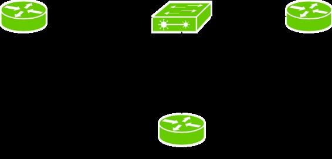
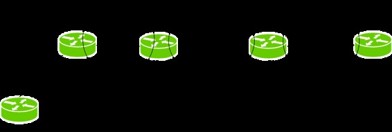
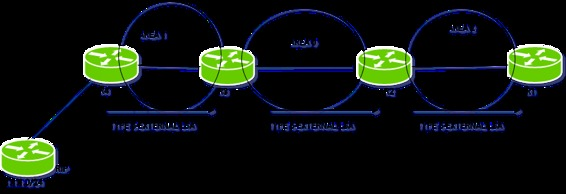

Open shortest path first (OSPF) is a link-state routing protocol which is used to find the best path between the source and the destination router using its own shortest path first (SPF) algorithm. OSPF routers exchange LSAs to update and maintain topological OSPF database by the devices operating OSPF but to first understand the types of LSAs, we first have to understand about the router roles in OSPF.
Router Roles –

- Backbone router – The area 0 is known as backbone area and the routers in area 0 are known as backbone routers.
- Internal router – An internal router is a router which have all of its interfaces in a single area.
- Area Boundary Router (ABR) – The router which connects backbone area with another area is called Area Boundary Router. The ABRs therefore maintain multiple link-state databases that describe both the backbone topology and the topology of the other areas.
- Area Summary Border Router (ASBR) – When an OSPF router is connected to a different protocol like EIGRP, or Border Gateway Protocol, or any other routing protocol then it is known as AS. The router which connects two different AS (in which one of the interface is operating OSPF in area 0) is known as Area Summary Border Router. These routers perform redistribution. ASBRs run both OSPF and another routing protocol, such as RIP or BGP.
LSA Types –
There are different types of LSAs exchanged depending upon the areas in which devices operating OSPF reside.
- Type-1 (Router Link Advertisement) – This is a Type-1 LSA exchanged by the routers which belongs to a same area. The router contains status of link, Router I’d, IP information and current interface state. If a router is connected to multiple areas then separate Type 1 LSA is exchanged.

As shown in the figure, Type 1 LSA are exchanged by the routers within the same area but if other interface of router is in another area then different Type 1 LSA will be exchanged.
- Type-2 (Network Link Advertisement) – This is a Type-2 LSA which is send by DR (Designed Router) only to all the other routers present in the same area (broadcast or multi-access network) . These contain the DR and BDR IP information and also the state of other routers that are part of same network. Remember DR is responsible for distributing routing information to all other routers present in same broadcast area.

As shown in the figure, in a broadcast network, only DR distributes the routing information to other routers in the same area.
- Type-3 (Summary LSA) – This is a Type-3 LSA which are generated by ABRs to areas other than in which it resides. The topological database which ABR receives from other areas are injected into the backbone area. This includes the IP information and Router I’d of ABR that is advertising these LSA.

As shown in the figure, R3 (ABR) floods the routing information of area 1 to other areas by generating Type 3 LSA.
- Type-4 (Summary ASBR LSA) – ABR send these Type 4 LSA towards the area other than the area in which they are generated. These LSAs are generated by ABR to tell others the route to ASBR.

As we can see in the figure, R4 is an ASBR therefore to advertise it’s own routes to R3, R4 will generate a Type 1 LSA which in turn generate a Type 4 LSA and flood the LSA to all other external areas to tell the route of ASBR to other area routers .
- Type-5 AS external link advertisement – These LSAs are genrated by ASBR to advertise routes of other Autonomous System than OSPF.

As shown in the above figure R4 will be an ASBR (as connecting area of OSPF and RIP) and route 1.1.1.0/24 is to be advertised in OSPF areas. This is the responsibility of ASBR to advertise other routing protocol routes into OSPF areas therefore R4 will now create a Type 5 LSA to advertise these route to all other OSPF areas.